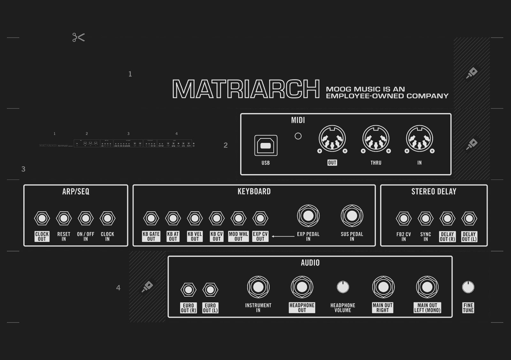
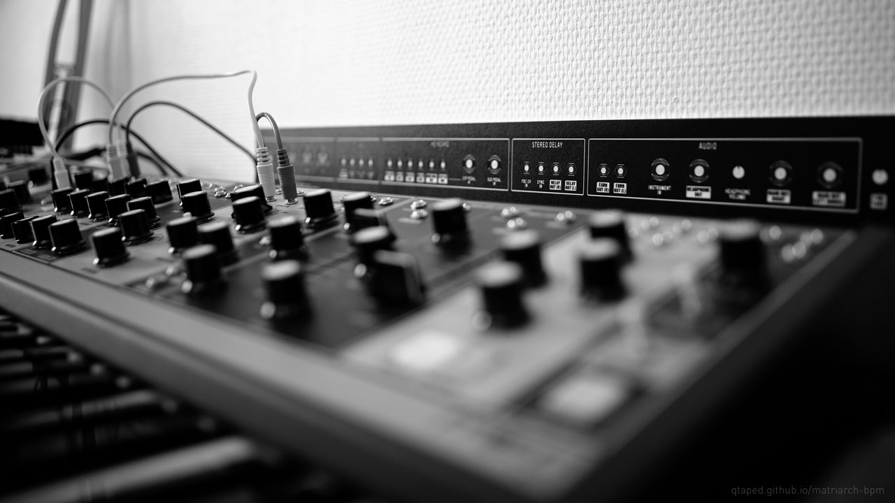

Moog Matriarch back panel mirrored

This is the diagram of the back panel of the Moog Matriarch at scale 1:1, mirrored (but not the labels)
You can print it and tape it on the wall in front of you (or wherever) to quickly view the back labels and enjoy your patches.
Ready-to-print (A4): PRINT, CUT & PASTE.
Download links
Full 1:1 Full 1:1 B&W Ready-to-print (A4) All versions
Last update: 2020.03.30
Issue with files? Report here.
This is not an official Moog site, more informations about Moog Matriarch here : www.moogmusic.com/products/matriarch
